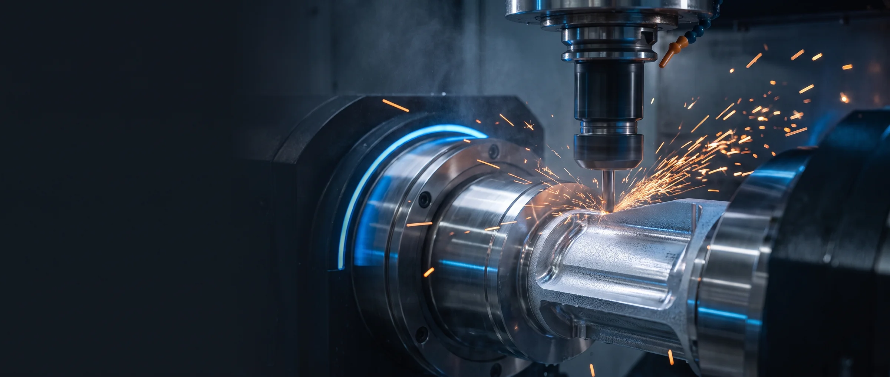
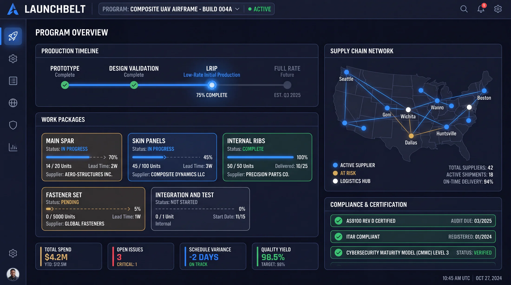

Asgard turns your design intent into qualified, compliant hardware, coordinating engineering, capacity, and production across the network. Technology agnostic. Compliance built into the spec. Prototype to full rate, with your capital kept in the product.
Illustrative console view · representative program data
You bring the design intent. Asgard brings the industrial base behind it, agnostic across every process, material, and shop. Qualified hardware, delivered against your spec, faster and at a fraction of the capital.
Asgard is technology, material, and supplier agnostic. We route your build to the right process and the right shop on the merits of your requirements. The spec drives the build.
Quality and regulatory requirements are embedded into the build from the first line of the spec. AS9100, ITAR, Nadcap, and program-specific gates travel with the work and are verified at every step, so qualification is locked in long before delivery.
Launchbelt scopes your build, attaches compliance, and matches it to qualified capacity in days. A quarter of vendor chasing becomes a quote you can act on.
Early-stage companies can reach qualified units on an existing network of advanced manufacturing, putting capital into the product while the network provides the tooling, floor space, and headcount.
Bring a napkin sketch or a release-ready drawing package. Asgard meets you where you are and carries the build the rest of the way, with engineering, compliance, and capacity coordinated in a single thread.
Submit requirements, drawings, models, materials, and volume targets. Concept stage or production-ready, we take it from there.
Embedded engineering makes the design producible and resolves tooling, tolerances, and material choices against real capability.
Quality and regulatory requirements are written into the build and verified at every gate along the way.
Launchbelt routes the work to qualified shops with open capacity and returns a scoped quote in days.
Build prototypes fast, iterate, then ramp into low-rate initial production on the same coordinated network.
Move into full-rate production and sustainment with traceability and program visibility intact end to end.
Submit one model and Launchbelt takes it apart for you. The engine breaks your build into work packages, routes each to the right process and qualified shop, and tracks every operation in a single live thread. Every operation stays on the books.
Illustrative console view · representative program data
From the moment you submit a spec, you get a live view of your quotes, the compliance status of every requirement, and the progress of each part as it moves from prototype into rate production.

Illustrative console view · representative program data
Air, sea, land, space, or robotics. Metal or composite. Ten units or ten thousand. Asgard stays agnostic across every process and shop, so your build is matched on the merits of the spec and the strengths of the network.
Capabilities On Tap
Standing up your own production line is the most expensive way to learn whether a design works. Asgard lets early-stage companies reach qualified units on existing infrastructure, then scale capacity as the program grows.
Typical scoped quote · days from a complete spec, where the industry takes months